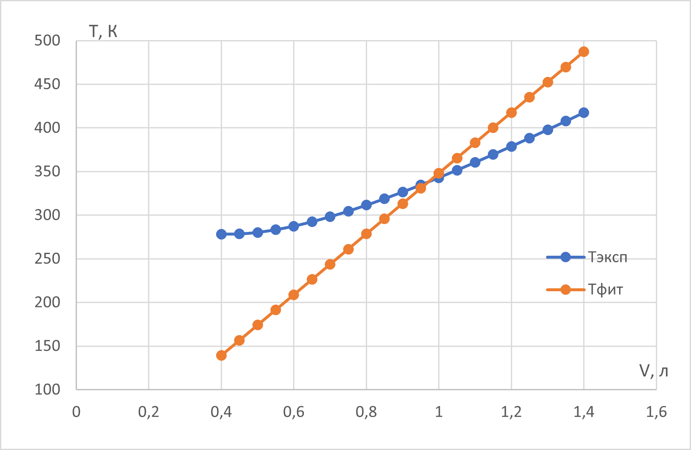
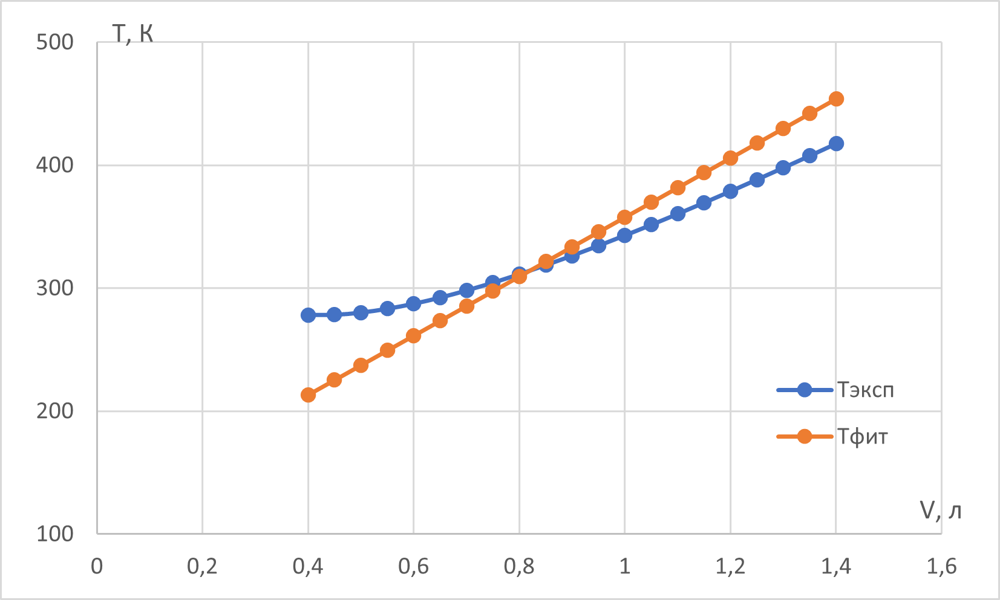
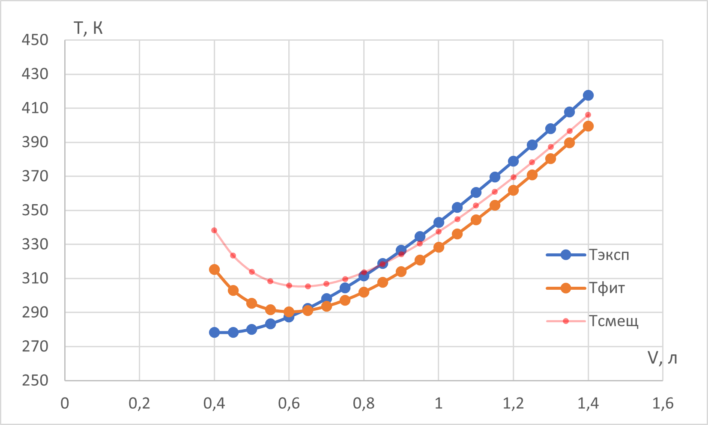
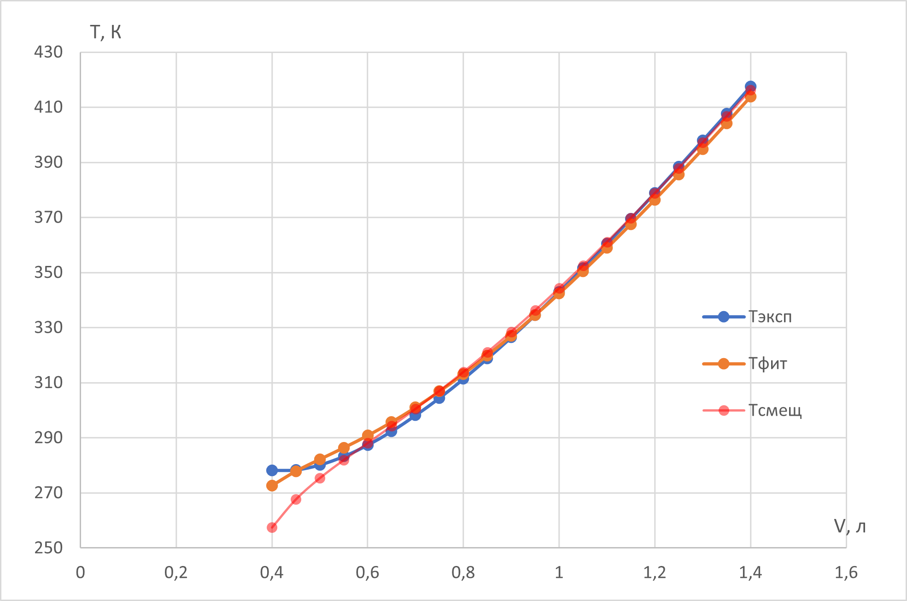

W22 (2022) — English translation
We will solve the problem formally, express the temperature from the model function and write down the sum $S$ that needs to be minimized. $$T=\frac{\left(p+a_{0}\right) V}{R}$$ $$S=\sum_{n}\left(T_{i}-\frac{p V_i}{R}-\frac{a_{0} V_{i}}{R}\right)^{2}$$ Differentiating: $$\frac{\partial S}{\partial a_{0}}=\sum_{n} 2\left(T_{i}-\frac{\left(p+a_{0}\right) V_{i}}{R}\right)\left(-\frac{V_{i}}{R}\right)=0$$ Transforming (сократив на "-2"): $$\frac{1}{R} \sum_{n} T_{i} V_{i}-\frac{p+a_{0}}{R^{2}} \sum_{n} V_{i}^{2}=0$$ And further $$p+a_{0}=\frac{R \sum_{n} T_{i} V_{i}}{\sum_{n} V_{i}^{2}}$$ We finally get $$a_{0}=\frac{R \sum_{n} T_{i} V_{i}}{\sum_n V_{i}^{2}}-p=R \frac{\overline{T V}}{\overline{V^{2}}}-p$$ $\textit{Note:}$ The answer could be written almost immediately if you realize that the model formula is linear dependence with one parameter: slope.
$\sum_{n} T_{i} V_{i}=6.5903~\mathrm{K}\cdot м^3, \overline{T V}=0.31382~\mathrm{K}\cdot м^3$ $\sum_n V_{i}^{2}=1.8935\cdot 10^{-5}~\mathrm{m}^6, \overline{V^{2}}=9.0167\cdot10^{-7}~\mathrm{m}^6$ Here and below, we save more significant figures to reduce the rounding error of the final answer.
$a_0=892~\mathrm{kPa}$

Again, we act formally: $$T=\frac{p V}{R}+\frac{a_{1}}{R}$$ $$S=\sum_{n}\left(T_{i}-\frac{p V_{i}}{R}-\frac{a_{1}}{R}\right)^{2}$$ $$\frac{\partial S}{\partial a_{1}}=\sum_{n} 2\left(T_{i}-\frac{p V_{i}}{R}-\frac{a_{1}}{R}\right)\left(-\frac{1}{R}\right)=0$$ $$\sum_{n} T_{i}-\frac{p}{R} \sum_{n} V_{i}-\frac{a_{1}}{R} \sum_{n} 1=0$$ Hence we get окончательный answer: $$a_{1}=\frac{R \sum_{n} T_{i}-p \sum_{n} V_{i}}{n}=R \overline{T}-p \overline{V}$$
$\sum_{n} T_{i}=7009.2~\mathrm{K}, \overline{T}=333.771~\mathrm{K}$ $\sum_{n} V_{i}=0.0189~\mathrm{m}^3, \overline{V}=0.0009~\mathrm{m}^3$
$a_1=974~\mathrm{Pa}\cdot м^3$

Again, we act formally: $$T=\frac{p V}{R}+\frac{a_{2}}{V R}$$ $$S=\sum_{n}\left(T_{i}-\frac{p V_{i}}{R}-\frac{a_{2}}{V_{i} R}\right)^{2}$$ $$\frac{\partial S}{\partial a_{2}}=\sum_{n} 2\left(T_{i}-\frac{p V_{i}}{R}-\frac{a_{2}}{V_{i} R}\right)\left(-\frac{1}{V_{i} R}\right)=0$$ $$-\frac{1}{R} \sum_{n} \frac{T_{i}}{V_{i}}+\frac{p}{R^{2}} \sum_{n} 1+\frac{a_{2}}{R^{2}} \sum_{n} \frac{1}{V_{i}^{2}}=0$$ Hence we finally get: $$a_{2}=\frac{R \sum_{n} \frac{T_{i}}{V_{i}}-p n}{\sum_{n} \frac{1}{V_{i}^{2}}}=\frac{R\overline{\left(\frac{T}{V}\right)}-p}{\overline{\left(\frac{1}{V^{2}}\right)}}$$ $\textit{Note:}$ Интуитивно можно было бы пойти путем линеаризации $p V^{2}+a_{2}=R T V$, and по аналогии с partом B1 написать, что $a_{2}=R \overline{T V}-p \overline{V^{2}}$. Это ошибочный path and неtrueе solution. For/At расчете таким способом оценка for $a_2$ will be “displaced”. In C3, we will calculate the values using both methods and see that using linearization results in a higher sum of squared deviations.
$\sum_{n} \frac{T_{i}}{V_{i}}=8489686~\mathrm{K}/м^3, \overline{\left(\frac{T}{V}\right)}=404271~\mathrm{K}/м^3$ $\sum_{n} \frac{1}{V_{i}^{2}}= 39221160~\mathrm{m}^{-6}, \overline{\left(\frac{1}{V^{2}}\right)}=1867674~\mathrm{m}^{-6}$
$a_2=0.728~\mathrm{Pa}\cdotм^6$ To calculate $a_2^*$ for the linearized dependence, we have already calculated all the quantities (point A2). Therefore $a_2^*=0.805$. If you calculate $S(a_2^*)=8813~\mathrm{K}^2$, it will be greater than $S(a_2)=5478~\mathrm{K}^2$.

Let's act again formally: $$T=\frac{p V}{R}+\frac{C}{R V}+\frac{d}{R V^{2}}$$ $$S=\sum_{n}\left(T_{i}-\frac{p V_{i}}{R}-\frac{c}{R V_{i}}-\frac{d}{R V_{i}^{2}}\right)^{2}$$ Differentiating, we get систему уравнений: $$\frac{\partial S}{\partial c}=\sum_{n} 2\left(T_{i}-\frac{p V_{i}}{R}-\frac{c}{R V_{i}}-\frac{d}{R V_{i}^{2}}\right)\left(-\frac{1}{R V_{i}}\right)=0$$ $$\frac{\partial S}{\partial d}=\sum_{n} 2\left(T_{i}-\frac{p V_{i}}{R}-\frac{C}{R V_{i}}-\frac{d}{R V_{i}^{2}}\right)\left(-\frac{1}{R V_{i}^{2}}\right)=0$$ Transforming the system: $$R \sum_{n} \frac{T_{i}}{V_{i}}-p \sum_{n} 1-c \sum_{n} \frac{1}{V_{i}^{2}}-d \sum_{n} \frac{1}{V_{i}^{3}}=0$$ $$R \sum_{n} \frac{T_{i}}{V_{i}^{2}}-p \sum_{n} \frac{1}{V_{i}}-c \sum_{n} \frac{1}{V_{i}^{3}}-d \sum_{n} \frac{1}{V_{i}^{4}}=0$$ Перейдем к средним значениям and for/atведем систему к удобному виду: $$c \overline{V^{-2}}+d \overline{V^{-3}}=R \overline{T / V}-p$$ $⟦ 14⟧$ Hence, solving jointly уравнения, we get answerы: $$c=\frac{R\left(\overline{T / V^{2}}\,\overline{V^{-3}}-\overline{T / V}\,\overline{V^{-4}}\right)-p\left(\overline{V^{-1}}\,\overline{V^{-3}}-\overline{V^{-4}}\right)}{\left(\overline{V^{-3}}\right)^{2}-\overline{V^{-2}}\,\overline{V^{-4}}}$$ $$d=\frac{R\left(\overline{T / V^{2}}\,\overline{V^{-2}}-\overline{T / V}\,\overline{V^{-3}}\right)-p\left(\overline{V^{-1}}\,\overline{V^{-2}}-\overline{V^{-3}}\right)}{\overline{V^{-2}}\,\overline{V^{-4}}-\left(\overline{V^{-3}}\right)^{2}}$$ $\textit{Note:}$ Similarly partу C1, можно было бы for/atвести модельную функцию к линейной зависимости: $c V+d=R T V^{2}-p V^{3}$, and оlimitять coefficientы $c$ and $d$ по formulaм, for/atведенным во введении к задаче. Это ошибочный path and неtrueе solution. For/At расчете таким способом оценки for $c$ and $d$ will be “displaced”.
We calculated two values $\overline{T / V}$ and $\overline{V^{-2}}$ in point C2. $\overline{V^{-1}}=1270.76~\mathrm{m}^{-3}$ $\overline{V^{-3}}=3.13694\cdot 10^9~\mathrm{m}^{-9}$ $\overline{V^{-4}}=5.85765\cdot 10^{12}~\mathrm{m}^{-12}$ $\overline{T / V^2}=0.568387\cdot 10^9~\mathrm{K}/м^6$
$c=1.02~\mathrm{Pa}\cdotм^6$ $d=-1.73\cdot10^{-4}~\mathrm{Pa}\cdotм^9$ Offset values: $c^*=1.08~\mathrm{Pa}\cdotм^6, d^*=-2.17\cdot10^{-4}~\mathrm{Pa}\cdotм^9$

In this part of the problem, it is necessary to similarly formally minimize the sum over the parameters $a$ and $b$. The final system of equations for the parameters will look like this: \begin{cases} \alpha_1 a + \alpha_2 b + \alpha_3 ab + \alpha_4 a^2 + \alpha_5 a^2b = c_1\\ \beta_1 a + \beta_2 b + \beta_3 ab + \beta_4 b^2 + \beta_5 ab^2 = c_2 \end{cases} Coefficients $\alpha_i$ and $\beta_i$ are related entirely to the average values calculated in point D2. Those. There would be no additional need to calculate anything. Each of the equations is linear in one of the variables and quadratic in the second. Therefore, the system can be reduced to a fifth-degree equation for one of the variables. An equation of degree five definitely has at least one valid solution.